A simple guide for trainees: from your first login to your portfolio. Read it once. Then keep it open while you work.
Website: https://devops-lab.mohityeotikar.workers.dev
Lab files (for incident drills): https://github.com/mohit-yeotikar/devops-lab
The screenshots show a demo account called Shrushti Sawant. Your screens show your own name and your own progress.
Open the website. Under the login box, click Create your account. Fill in the form:
- only. It becomes your portfolio link, for example /u/first-last.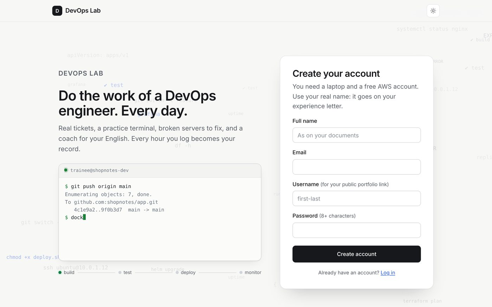
The sign-up page. Click "Create account" when the form is complete.
Next time, open the website and type your email and password. Click Log in. You stay logged in on that browser for 30 days.
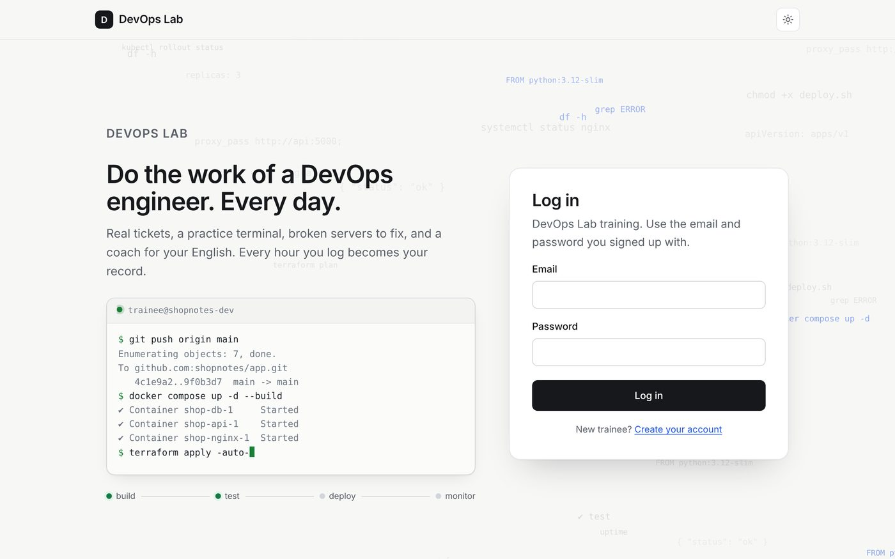
The login page. The small terminal on the left only shows an example. You cannot type in it.
After login you see your home page. Read it from top to bottom:
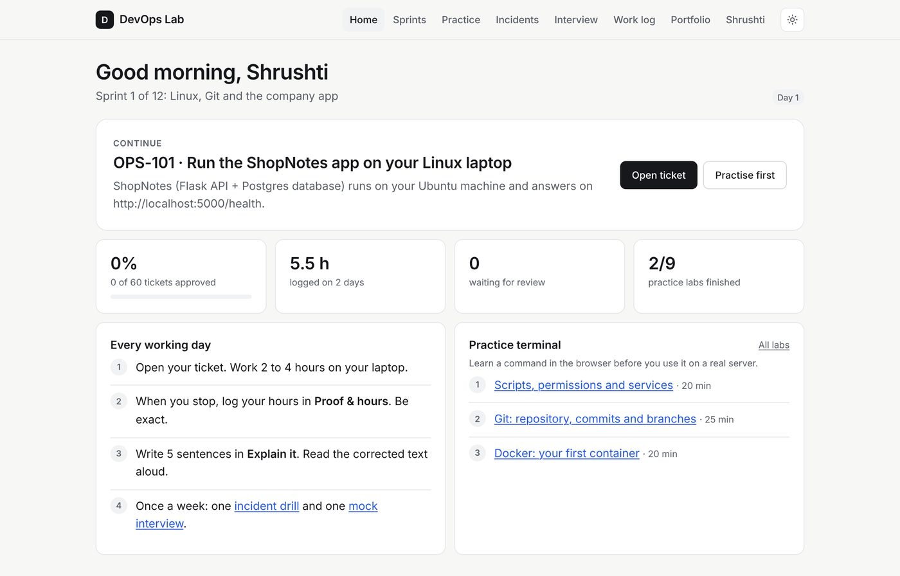
The menu at the top is on every page: Home, Sprints, Practice, Incidents, Interview, Work log, Portfolio and your name (profile). The button on the far right switches between light and dark colours.
Most beginner problems come from these small things. Learn them once.
| Rule | Why |
|---|---|
| Read the whole error message. | The error almost always says what is wrong: "No such file", "Permission denied", "command not found". |
| Spaces matter. | cd shopnotes works. cdshopnotes does not. docker compose has a space. |
| Big and small letters are different. | App.py and app.py are two different files. Commands are in small letters. |
| Know where you are. | The prompt shows your folder, for example ~/shopnotes$. pwd prints it. ~ is your home folder. |
| Press Tab. | Tab completes file and folder names. It saves time and stops typing mistakes. |
| Press the Up arrow. | It brings back your last command. Fix one word and press Enter again. |
| Ctrl+C stops a command. | In a real terminal Ctrl+C does not copy. Copy is Ctrl+Shift+C, paste is Ctrl+Shift+V. |
> replaces, >> adds. | One arrow deletes what was in the file. Two arrows add at the end. |
./ runs a file in this folder. | ./deploy.sh runs the script. If you see "Permission denied", run chmod +x deploy.sh first. |
sudo means "as admin". | Use it only when the error says "Permission denied" or "Access denied" for system files and services. |
| Quotes around text with spaces. | git commit -m "Add health check". Every quote you open must be closed. |
| After you change a config file, restart. | A program reads its config when it starts. A changed file does nothing until the restart. |
| Check with the same command. | The command that showed the problem must show the fix. Example: curl -i localhost/health before and after. |
Click Practice in the menu. A lab is a fake server inside your browser. Nothing can break and nothing costs money. Do a lab before the real ticket on your laptop. Each lab takes 15 to 25 minutes.
There are nine labs: files and folders, reading logs, scripts and services, Git, Docker, Docker Compose, and three incidents (502 Bad Gateway, disk full, Kubernetes CrashLoopBackOff). Start here marks your next lab. Finished marks the ones you completed.
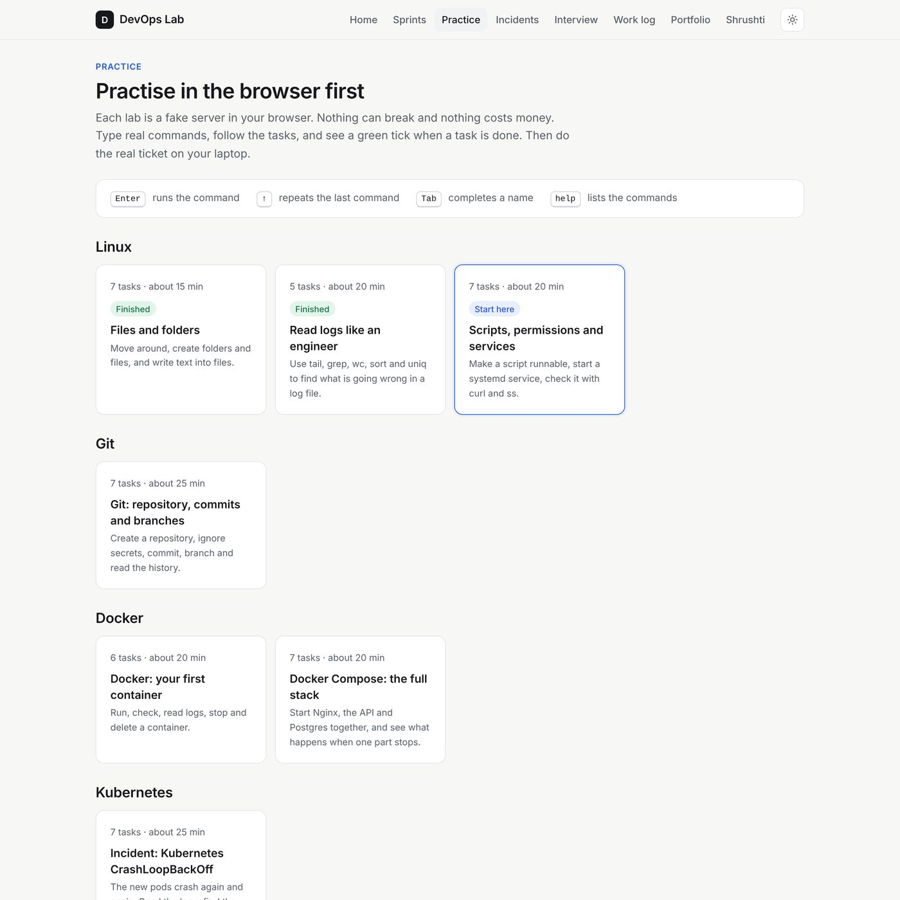
The keys at the top work in every lab: Enter, the Up arrow, Tab, and the command help.
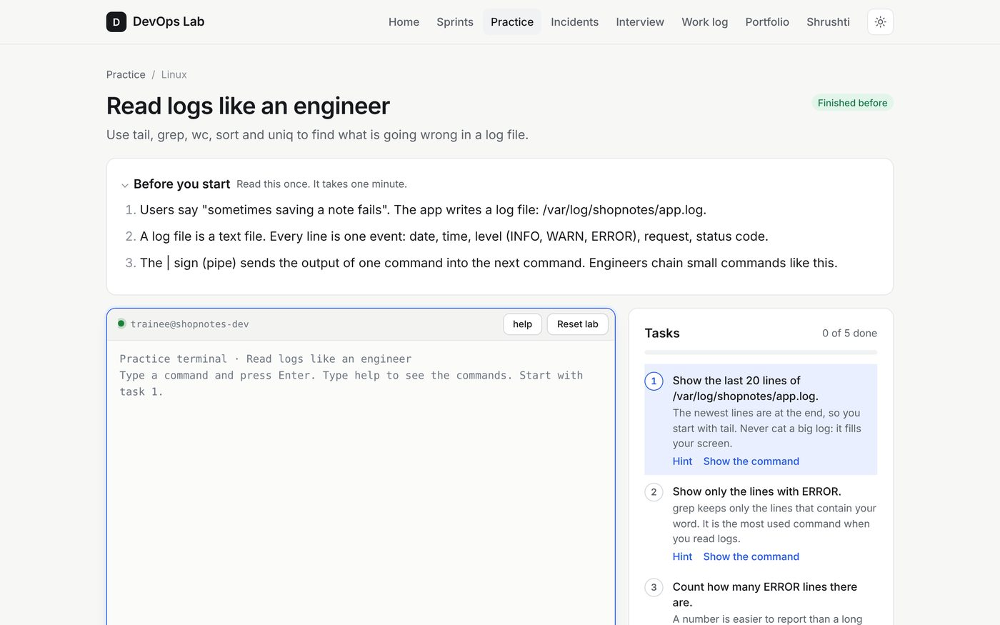
A lab at the start: the terminal on the left, the tasks on the right. On a phone, the current task is shown above the terminal.
Your progress is saved in this browser. You can close the page and come back later. Reset lab starts again from zero.
Mistakes are normal. The terminal answers like a real server, and then a yellow Tip explains the problem in simple words. In the picture, the trainee typed grpe instead of grep. The tip asks: Did you mean "grep"?
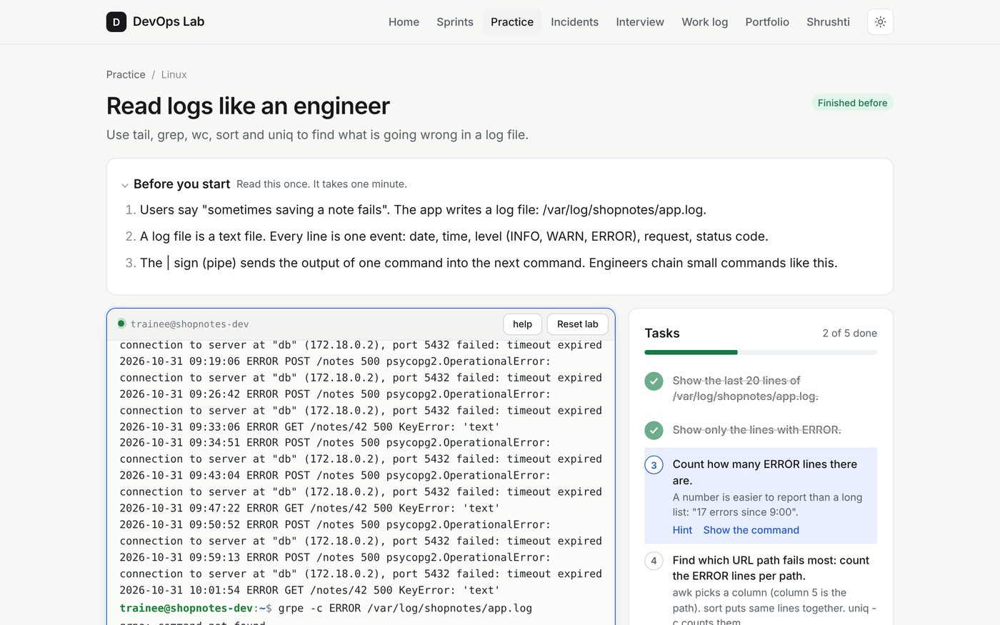
Press the Up arrow, fix the word, press Enter.
Every task has two buttons:
Under each task, one grey line says why engineers do this. Read it. Interviewers ask "why", not only "how".
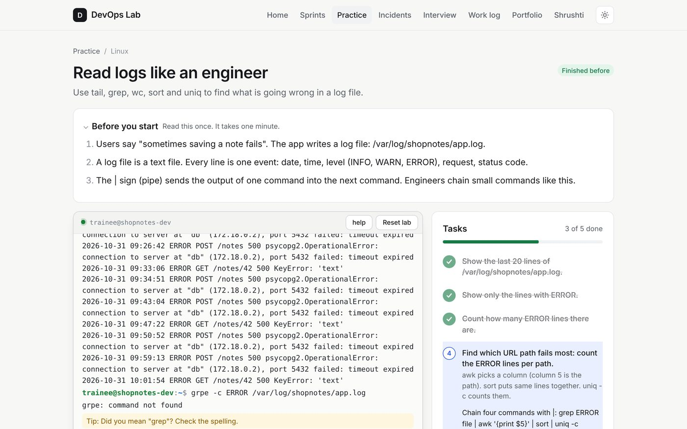
Some tasks need you to change a file. Type nano FILE, for example nano nginx.conf. An editor opens over the page.
sudo nano FILE.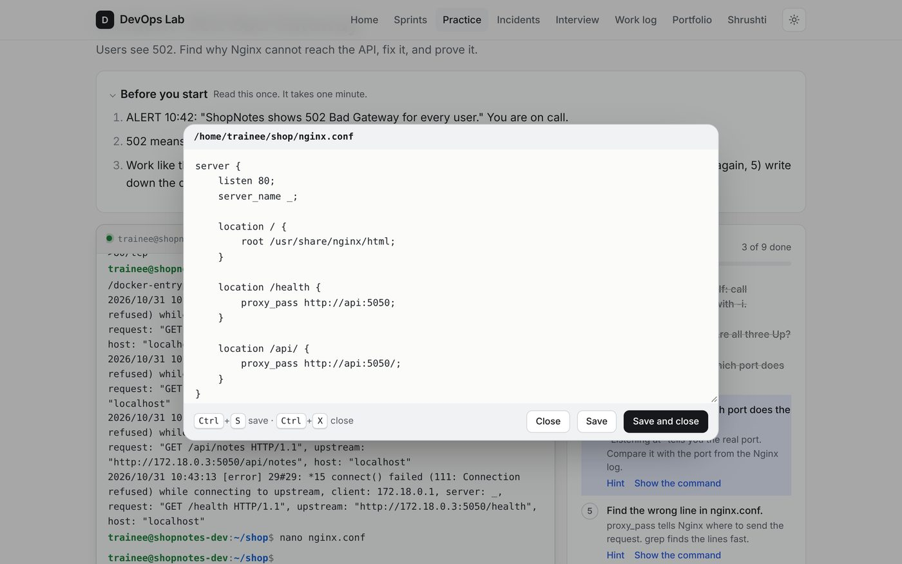
The editor in the incident lab "502 Bad Gateway". The wrong port is in the proxy_pass lines.
When all tasks have a green tick, three questions appear below the terminal. Choose one answer for each. Click Check my answers. The right answers turn green, and a short explanation appears under each question. Now the lab is saved as Finished, and it shows on your portfolio.
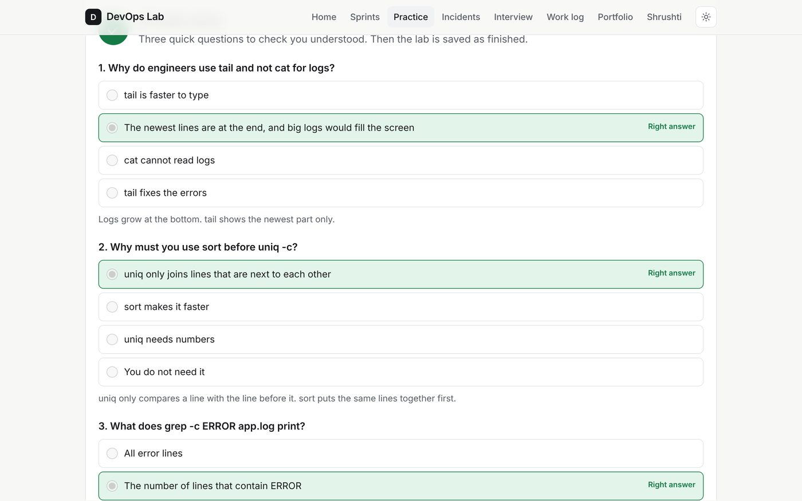
Click Sprints, then Sprint 1. A sprint is 2 weeks of work with 5 tickets. Read "What you do in this sprint" first. The blue box shows the practice labs for this sprint. Do the tickets in order: OPS-101, then OPS-102, and so on. Each ticket builds on the one before.
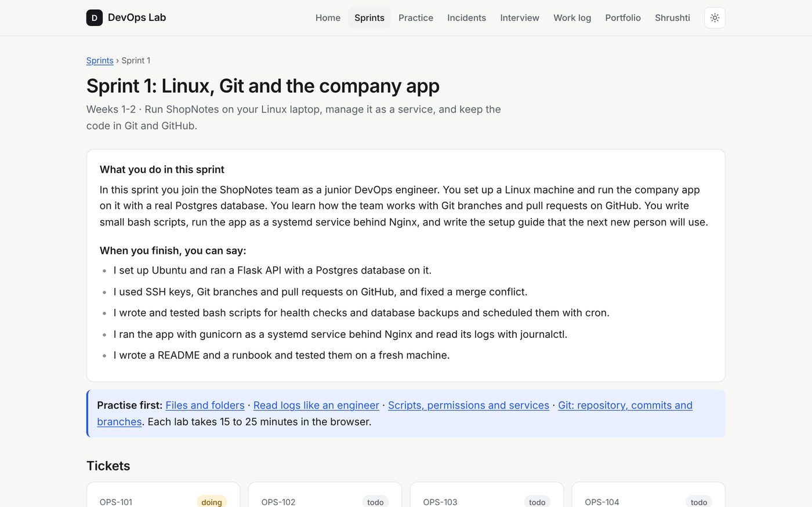
A ticket reads like a message from your team lead at a real company. Read the Goal and the message. Then click Start this ticket.
Above the tabs is a strip with five steps. It always shows where you are: blue is now, green is done.
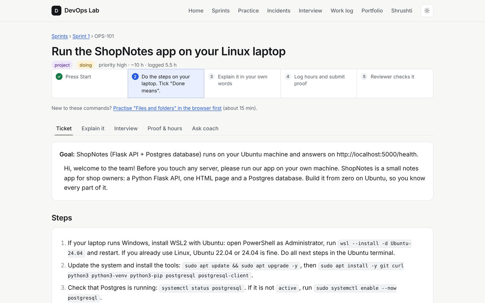
The five tabs: Ticket, Explain it, Interview, Proof & hours, Ask coach. You use all five.
In the Ticket tab, follow the Steps one by one on your laptop. Type each command yourself and read what it does. If a command fails, read the error first, then try again.
Under Done means is a checklist. Tick a line only when it is true on your laptop. It saves by itself. Stuck? Open the hints gives help. Words to know explains the technical words of the ticket.
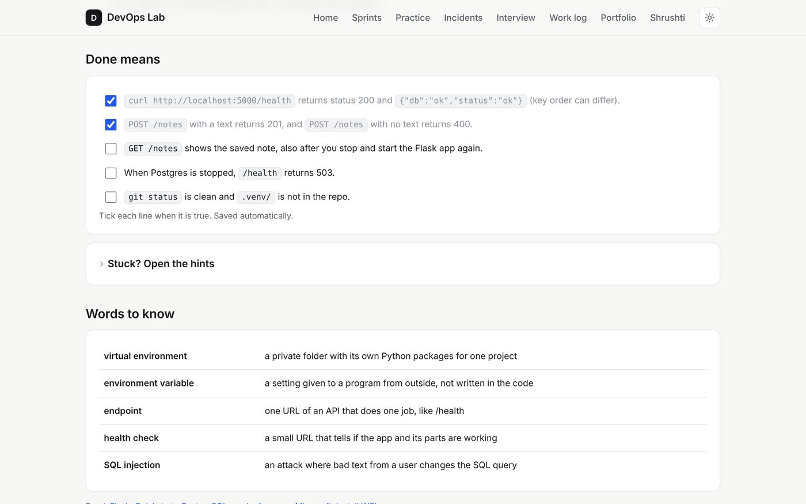
This tab is the most important one for interviews. First read How an engineer says it: a short example in simple English.
Then write your own 5 to 7 sentences in the box. Start with "In this task I ...". Use the past tense: "I installed", "I created", "I tested". Mistakes are fine. Click Check my explanation.
The coach gives you a score out of 10, corrects your English sentence by sentence, says what is missing, and writes a short text to say in an interview. Read that text aloud three times. If your score is under 7, write it again.
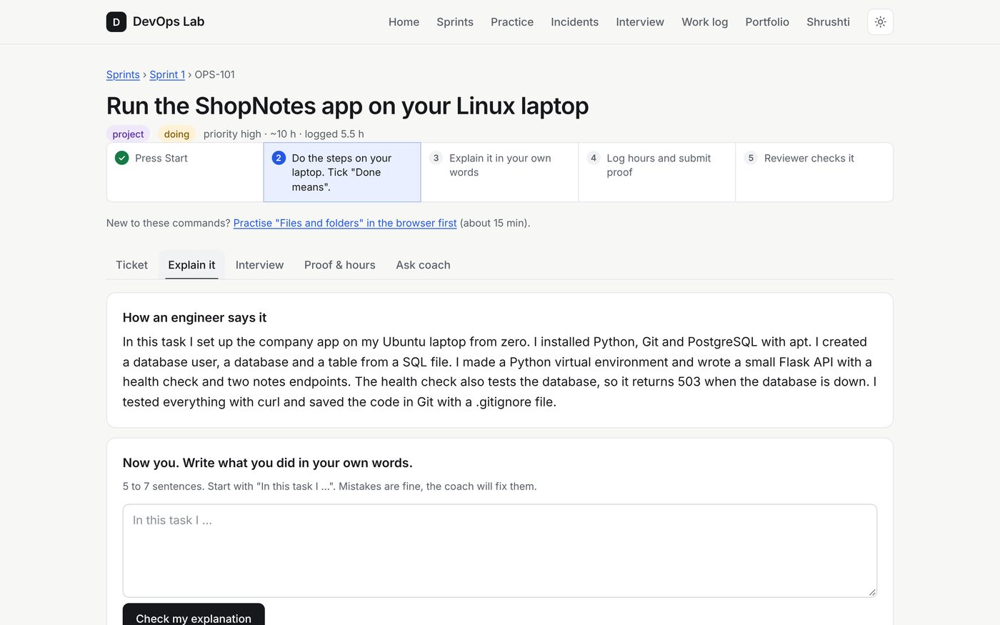
Three questions that interviewers ask about this kind of work, each with a model answer. Open a question. Read the answer. Close it. Now say the answer aloud without looking. Do this for every ticket.
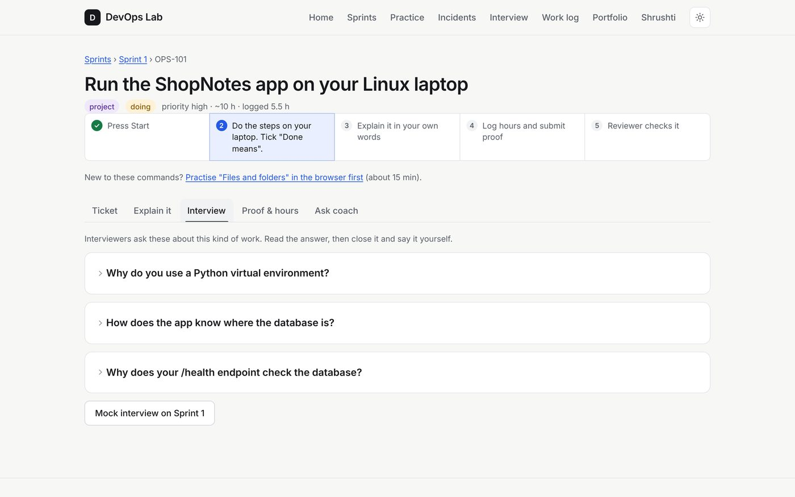
Every time you stop working, open Proof & hours. Write the hours, the day and one short line about what you did. Click Add. Be exact: your hours are compared with your Git commits before the experience letter is written.
When every "Done means" line is true, submit your proof:
Click Submit for review. You can start the next ticket while you wait. The reviewer approves it or asks for changes with a note. If changes are asked, fix them the same day and submit again.
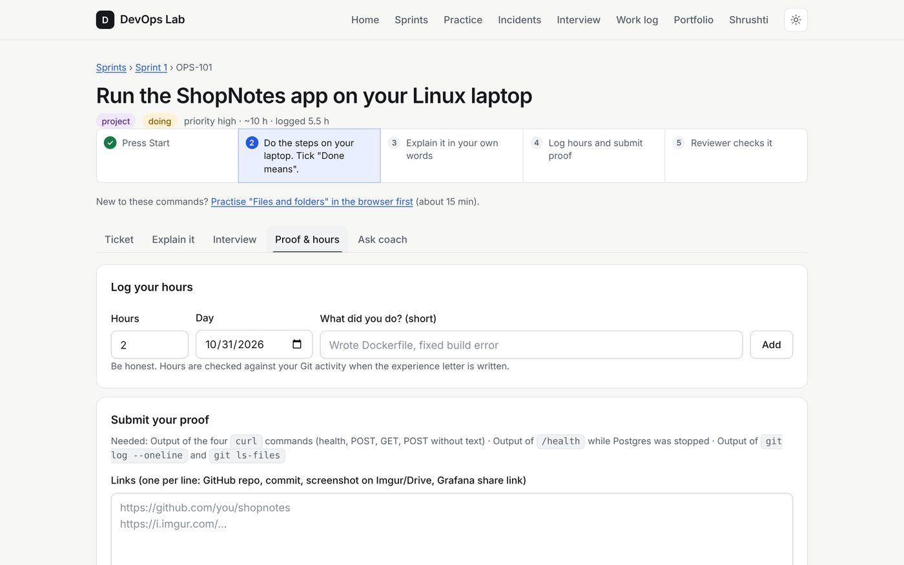
The Ask coach tab is a chat about this ticket. Write in simple English what you did and what you see. Example: "I ran docker compose up. The app container stops at once. What should I check?" The coach answers simply and gives small hints first. It does not do the work for you. You can also ask the meaning of a word.
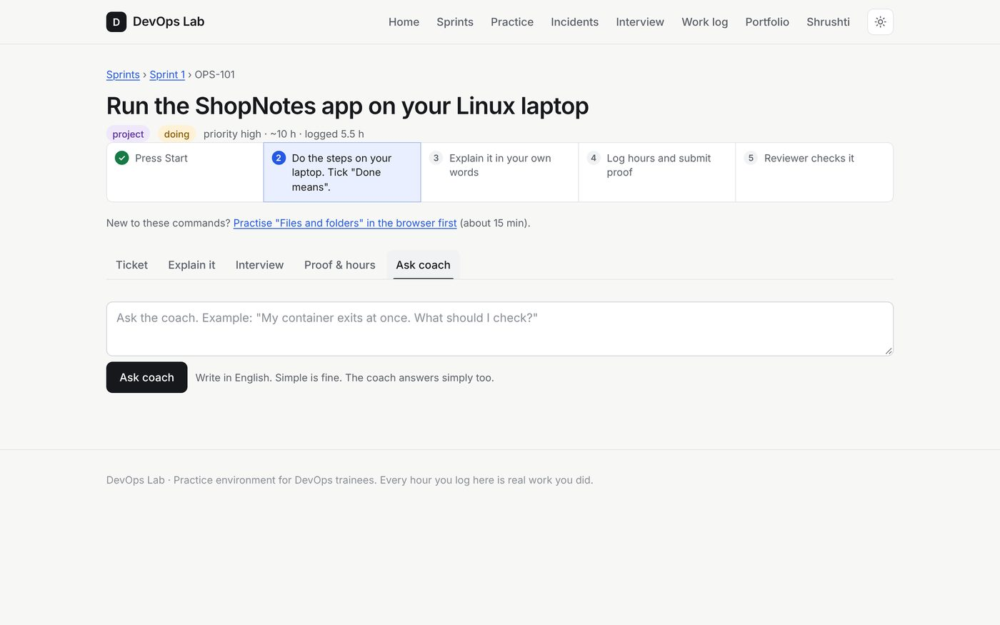
Once a week, do one incident drill. Click Incidents. A drill is a broken system that runs on your laptop with Docker. You find the cause and fix it, like an engineer on call. Do the three incident labs in Practice first: they teach the same way of working in the browser.
git clone https://github.com/mohit-yeotikar/devops-lab.gitcd devops-lab/drills/NAME, then docker compose up -ddocker compose ps, docker compose logs, curl, the config files.docker compose down -v.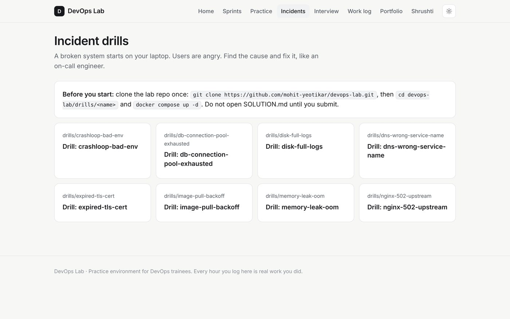
Once a week, do one mock interview. Click Interview. Choose Everything I have worked on or one sprint. Click Start interview. You get 7 questions, one at a time.
Write each answer the way you would say it: "I built", "I fixed". Name the tool, the problem, what you did, and the result. Short sentences are good. After each answer you see a score, feedback and a better answer. If your average is under 7, read every better answer aloud and do the interview again in two days.
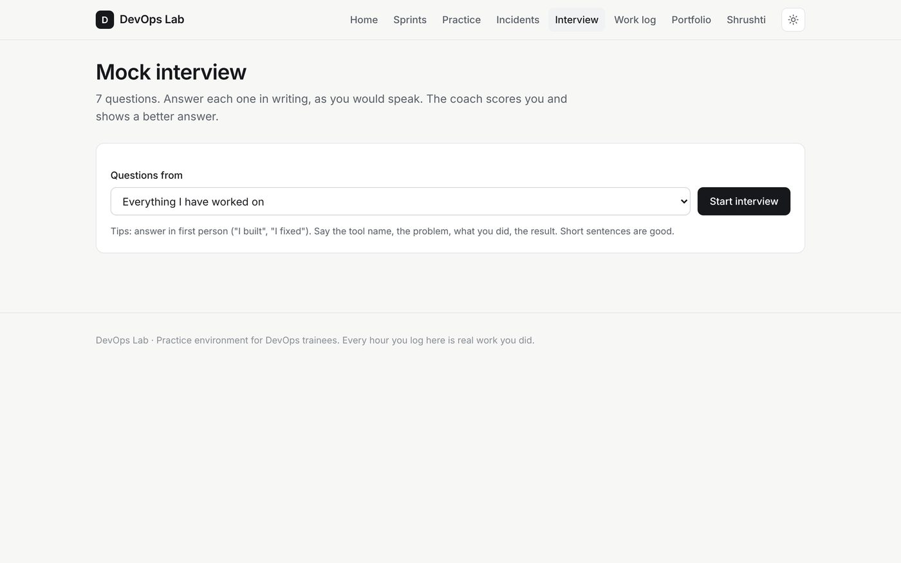
Click Work log to see every hour you logged: the total, the working days, the hours per week and the full list. The reviewer and the experience letter use this list. It should grow on every working day.
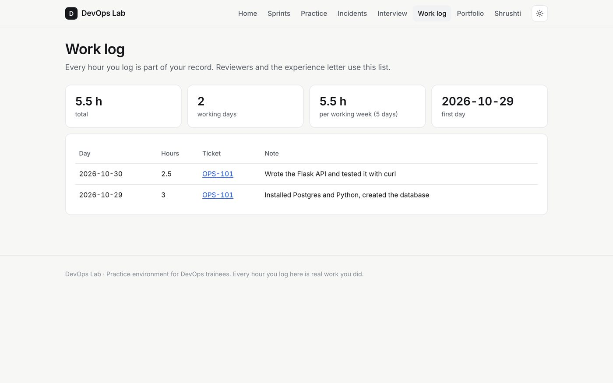
Click Portfolio. This is your public page: https://devops-lab.mohityeotikar.workers.dev/u/YOUR-USERNAME. It shows your hours, approved tickets, finished sprints, solved incidents, finished practice labs, your projects with your own explanation and links, and your skills. Only approved work appears. Put this link on your resume and on LinkedIn.
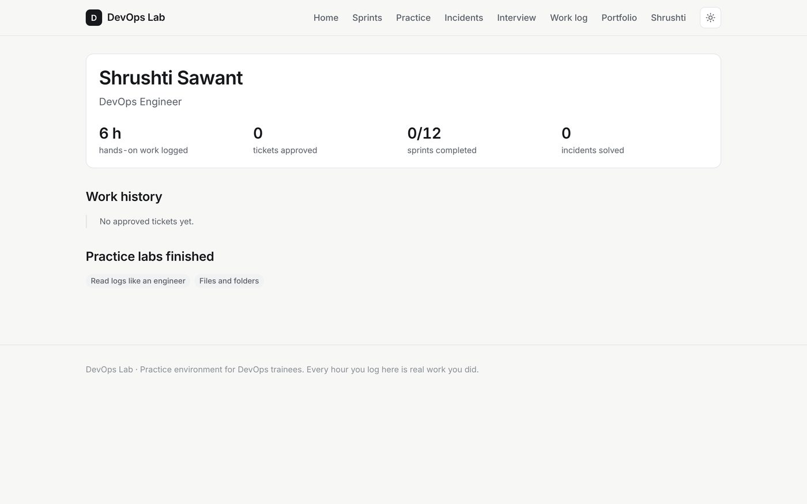
Click your name in the menu. Add your city, target role, GitHub and LinkedIn links, and a short bio of 2 to 3 simple sentences. The bio shows on your portfolio. Keep Make my portfolio public switched on, so employers can open your link. Log out is at the bottom.
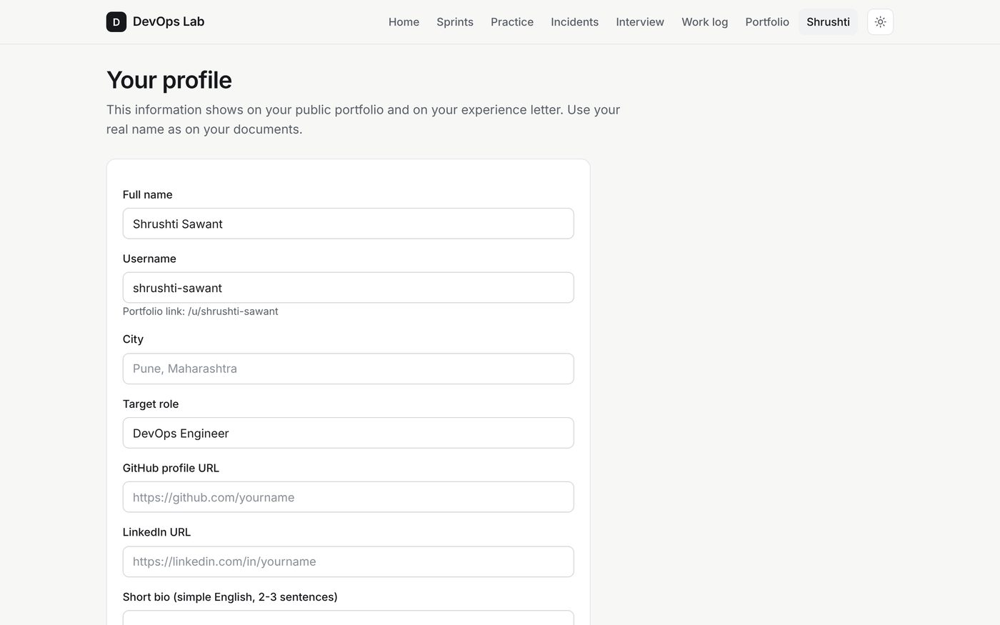
The experience letter at the end states exactly what the log shows: the first and last day, hours, sprints, approved tickets and incidents. Employers check experience letters. A letter that is not true ends a job offer, so the record must be real.
| When | What |
|---|---|
| Every working day | Open Home. Work 2 to 4 hours on your open ticket. Log the hours when you stop. |
| Before a new topic | Do the practice lab for it in Practice (15 to 25 minutes). |
| Every ticket | Tick "Done means", write "Explain it" until the score is 7 or more, say the 3 interview answers aloud, submit proof. |
| Once a week | One incident drill and one mock interview. |
| Every 2 weeks | Finish the sprint. Check that every ticket is submitted. Start the next sprint. |
| When the reviewer asks for changes | Read the note. Fix it the same day. Submit again. |